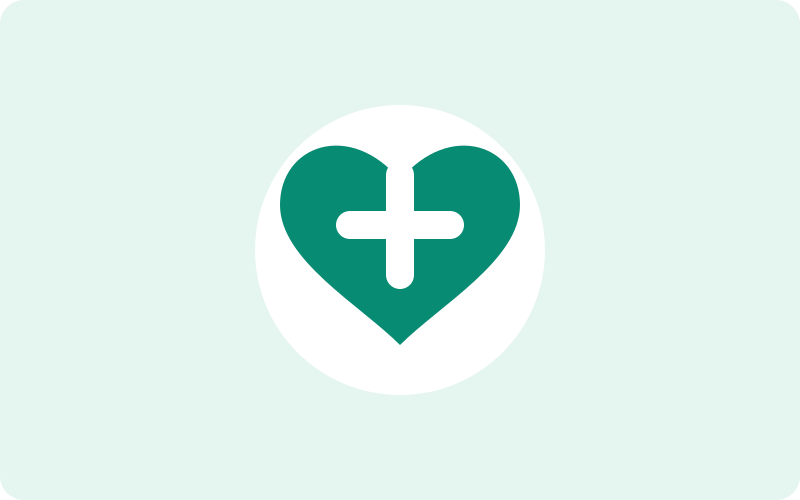
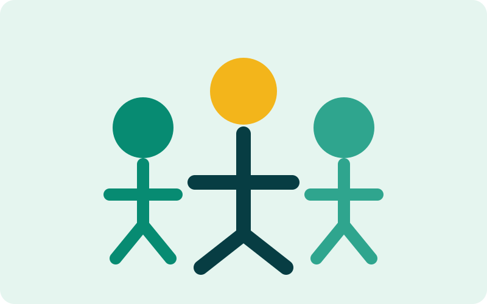
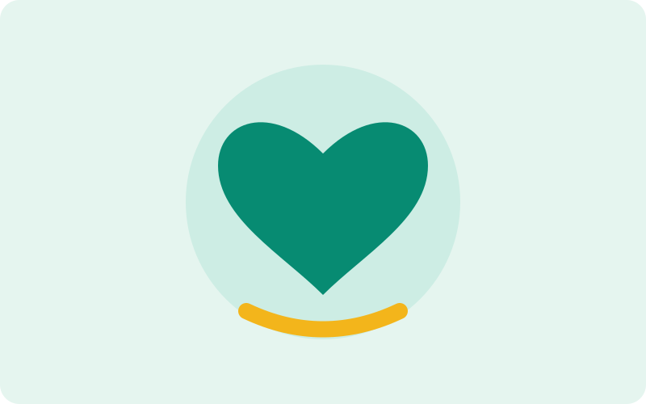
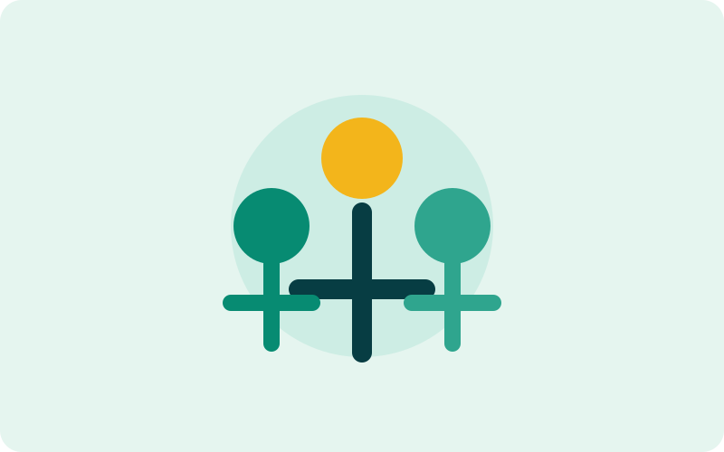

Educação
Apoio à educação básica, reforço escolar e capacitação.
Nossas iniciativas
Conheça nossas frentes de atuação e descubra como participar.
Apoio à educação básica, reforço escolar e capacitação.

Campanhas de prevenção e acesso a cuidados básicos.

Projetos voltados à inclusão e ampliação de oportunidades.
Campanhas de doação
Sua contribuição ajuda a manter projetos e fortalecer ações comunitárias.
Quero doar
Voluntariado
Seu tempo e suas habilidades também podem fazer parte da nossa rede de solidariedade.
Quero ser voluntário
Sistema de feedback